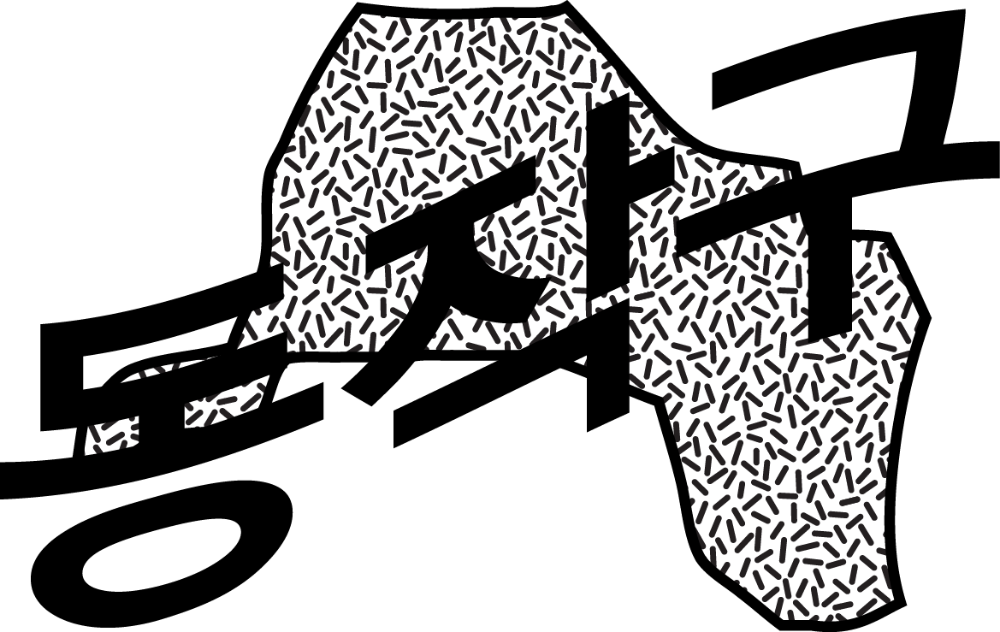
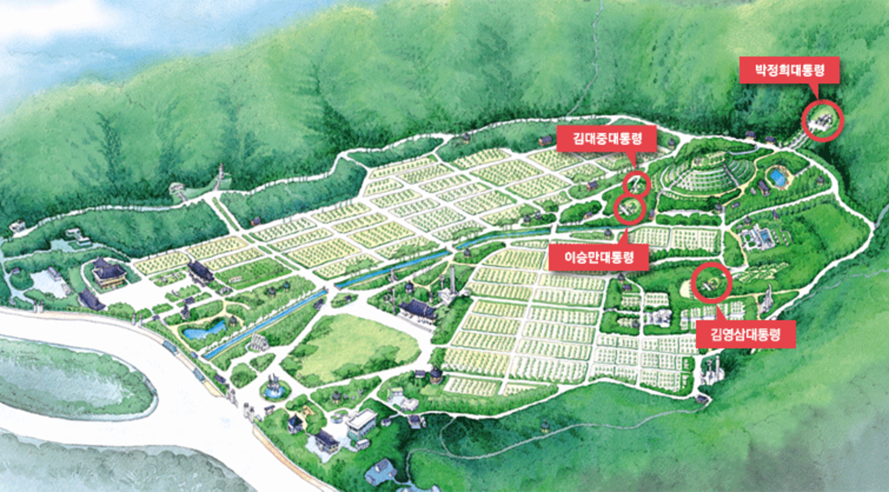
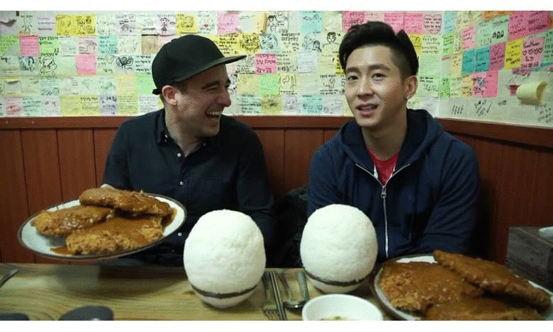

<div class="scroll" data-ui="jscroll-default">  
  <div class="icon_div">
    
  </div>

  <div class = "hi" data-gu="동작구" data-dong="노량진동">
    
  </div>
  <div class = "b_cap">
    <span class="word_c">충효의 상징? 동작구?의 백로?를 형상화한?마스코트. 그리고 동작讚가.</span> </div>
  <div class = "b_cap" style="margin-top:5px;">
    <span class="word_c">
      <audio controls>
        <source src="sound/dongjak_song.mp3" type="audio/mp3">
      </audio>
    </span> 
  </div>
  <div class = "thing">로미와 로야</div>

  <div class = "hi" data-gu="동작구" data-dong="상도동">
    
  </div>
  <div class = "b_cap">
    <span class="word_c">눈물 젖은 토스트는 이제 옛말! 장기불황과 함께하는 노량진의 걷고 싶은 거리입니다.</span> </div>
  <div class = "thing">학원가 핔닉</div>

  <div class = "hi" data-gu="동작구" data-dong="상도동">
    
  </div>
  <div class = "b_cap">
    <div class="link_div">
      <a href="http://www.musee-orsay.fr/en/home.html" target="_blank"></a>
    </div>
    <span class="word_c">하급 관료 지망생들과 마가린을 처넣은 컵밥을 드셔보셔요. 소화가 안되면 육교에 "오르세"요.</span> </div>
  <div class = "thing">서서컵밥</div>

  <div class = "hi" data-gu="동작구" data-dong="상도동">
    
  </div>
  <div class = "b_cap">
    <span class="word_c">언니~ 바가지 조금만 씌울게! ;) 그리구 노로바이러스(Znoro) 걱정은 이제 그만!</span> </div>
  <div class = "thing">노량진<br>수산시장</div>

  <div class = "hi" data-gu="동작구" data-dong="상도동">
    
  </div>
  <div class = "b_cap">
    <span class="word_c">おげんきですか?</span> </div>
  <div class = "thing">박근혜는 언제까지 대통령</div>

  <div class = "hi" data-gu="동작구" data-dong="상도동">
    
  </div>
  <div class = "b_cap">
    <div class="link_div">
      <a href="http://www.snmb.mil.kr/mbshome/mbs/snmb/html/pop_tour1_1.html" target="_blank"></a>
    </div>
    <span class="word_c">한국현대사의 굴곡을 굽어보세요. 다만 NO TOUCH! 언제 다시 깨어날지 모른다!  (시계 반대방향으로) 박정희, 김대중, 이승만, 김영삼 국가대표원수 묘지</span> </div>
  <div class = "thing">노다지<BR>(NO TOUCH)!</div>

  <div class = "hi" data-gu="동작구" data-dong="상도동">
    
  </div>
  <div class = "b_cap">
    <span class="word_c">위장이 터질 때까지 대왕돈까스를 드신 뒤엔 주민자치형 녹차, 어떠세요?</span> </div>
  <div class = "thing">대방동대왕돈까쓰</div>

  <div class="next"><a href="gwanak.html">.</a></div>
</div>